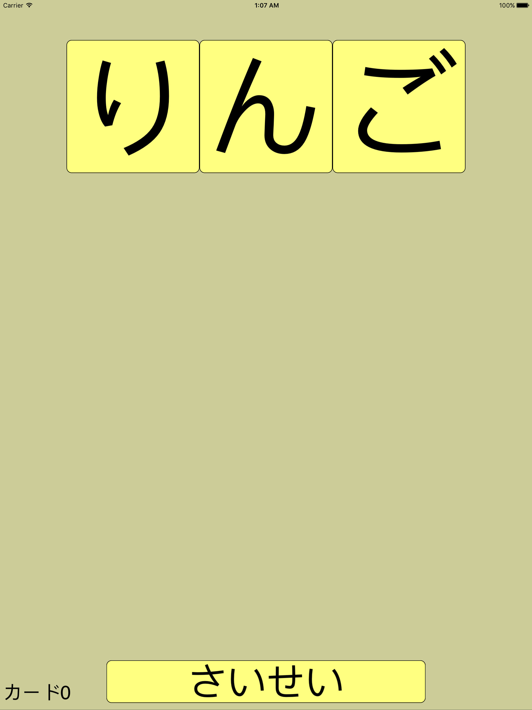
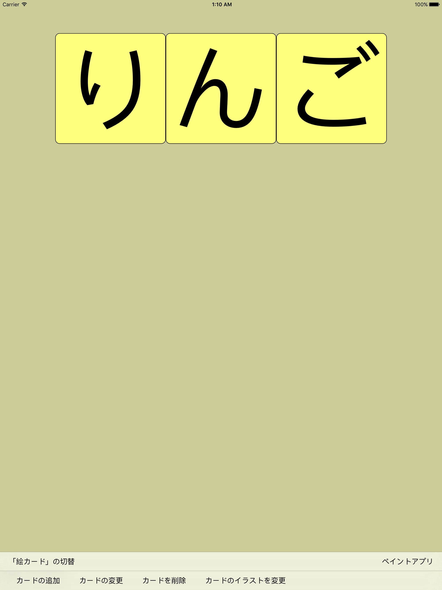
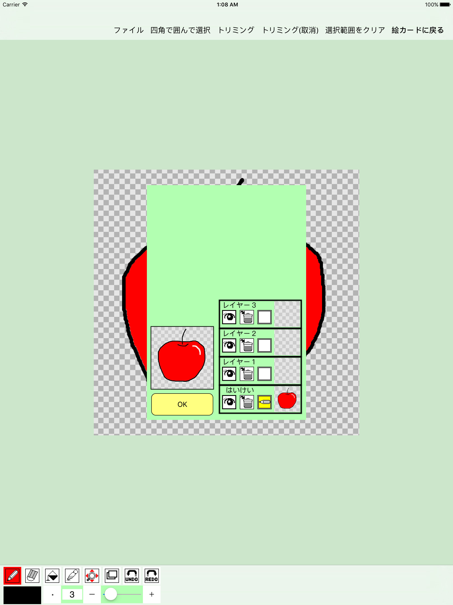
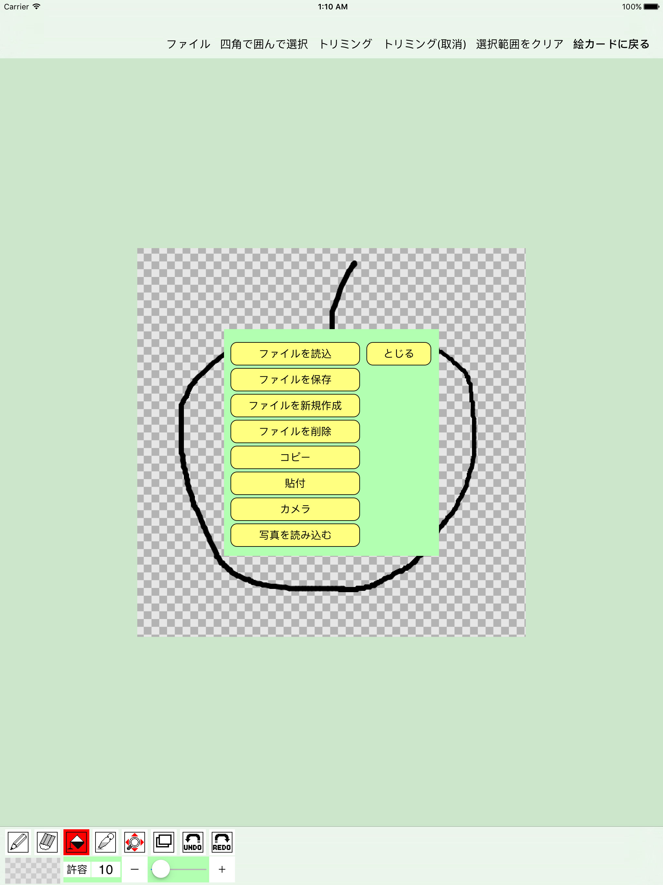
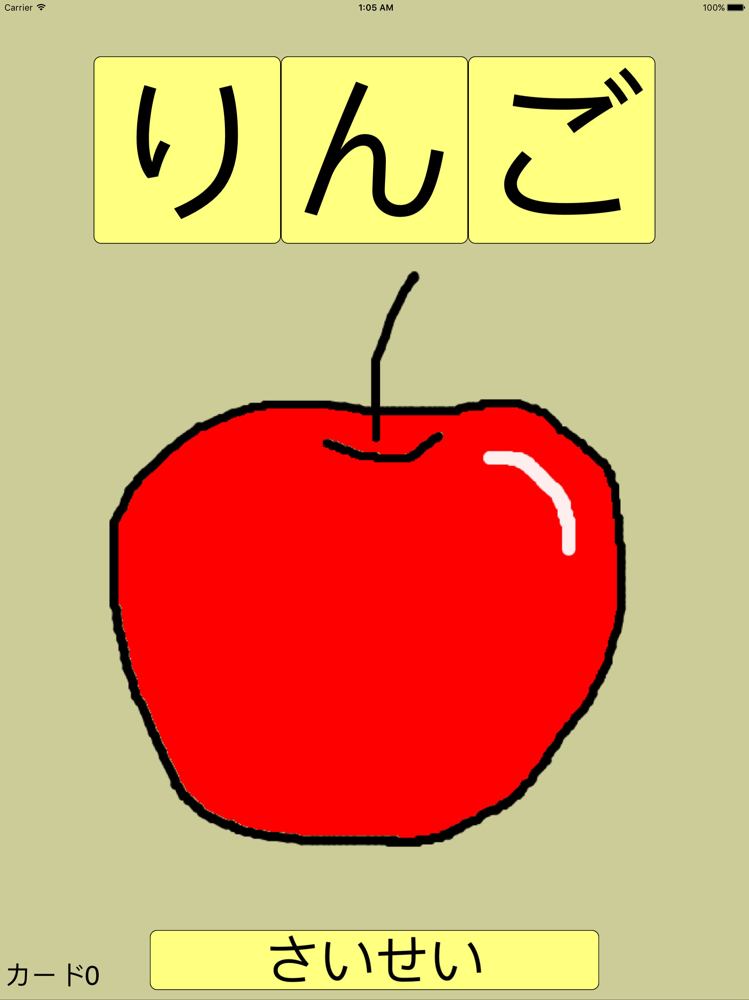

とぅしぃ！のホームページ
iPad対応アプリ
「えか～ど！」


絵カード＆イラスト作成アプリ「えか～ど！」です！
横へスワイプすると次のカードへ変更できます。

上へスワイプするとメニューが表示されます。

ペイントアプリボタンを押すと、イラストの作成＆編集ができます。
上のバーの「ファイル」を押したあと、
「ファイルを読み込む」ボタンで、絵カード用のイラストや写真を読み込めます。
「カメラ」ボタンで写真を撮って利用したり、
「写真を読み込む」ボタンで保存された写真を利用することもできます。

「ファイルを保存」ボタンを押して、名前を付けて保存したら、絵カードで利用することができます。

「カードのイラスト変更」ボタンで、イラストを設定＆変更することができます。
上のバーの「絵カードに戻る」ボタンを押すと、ペイントを終了して絵カードに戻ることができます。
・・・以上